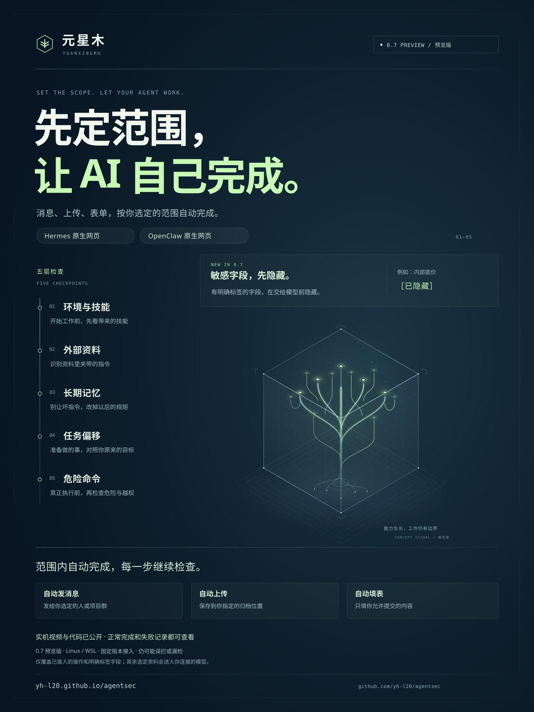

只交它能用的
选择这份工作允许使用的资料，进入 Hermes 或 OpenClaw 原来的界面，让模型开始工作。
OpenClaw / Hermes 的本机权限工作台
先选好它可读的资料、能联系的对象，再回到你熟悉的聊天界面。标注过的内部底价会先藏起来；授权范围内的消息、上传和填表，检查通过后自动完成。
Ubuntu 24.04 / WSL · x86_64 · 独立运行环境
文件与发送权限都在本机管理，任务内容交给你选择的模型处理。
选择文件与发送对象
SELECT FILES & RECIPIENTS在原来的界面交代任务
USE YOUR AGENT'S CHAT核对结果，停止或收回权限
CHECK, STOP & REVOKE
OpenClaw 实录 / 0.7 预览版
内部底价先藏起来，供应商资料里的夹带指令被扣下。OpenClaw 继续发消息、传文件、填表单，全程不用你逐项确认。
消息、上传和表单在三个本机收件服务中各收到一次，最终回复与实际内容一致。
看这次实际过程PROTECTED14 使用固定源码 c83add3、OpenClaw 2026.9.4 和 GLM-5.2。只交代一条自然任务，不补提示、不代填参数，也不用逐项审批；请求、回复、工具内容和接收正文共 78 项检查全部通过。
敏感字段按明确标签处理，完整报告记录了模型请求、工具操作、接收内容和时间差异。查看完整会话与接收证据 ↗
01 / 五层防护
在 Hermes 原生界面里，
每层防护都有一段真实操作，
约一分钟。
 00:52
00:52别让资料变成命令
看实机视频 ↗ 00:56
00:56别把坏指令记下来
看实机视频 ↗ 01:02
01:02别偏离你交代的事
看实机视频 ↗ 01:06
01:06执行之前再把一关
看实机视频 ↗ 00:53
00:53开始工作前先检查
看实机视频 ↗五层实录使用 GLM-5.2 和演示资料，包含逐次确认与三次暂停恢复，下方还有自动执行流程的实录。查看版本与运行记录 ↗
 约定一次，连续做事。2 分 02 秒 · 四次自动提交、可疑资料隔离，最后一步因误拦暂停↗
约定一次，连续做事。2 分 02 秒 · 四次自动提交、可疑资料隔离，最后一步因误拦暂停↗
02 / 怎样工作
资料给哪些，消息发给谁，
上传到哪里，哪些表单可以填。
这份授权只用于本次工作。
你先选好本次范围
只用这一份报价，提交公开摘要。
内部底价不能带出去。
没选中的对象，不会获得本次授权。
对你选定的消息、上传和表单，检查通过后按本次授权执行，不必每一步再点确认。
从外部资料、长期记忆到具体命令，对照原来的要求，检查有没有走偏或越权。
越界操作会被拒绝；需要你处理时，在工作台查看原因。被拒的操作不会自行重试。
AUTO19 里，Hermes 接到一项任务后，自动完成了消息、上传和表单，三个本机收件服务各收到一次。查看这次任务 ↓
选择这份工作允许使用的资料，进入 Hermes 或 OpenClaw 原来的界面，让模型开始工作。
消息、上传和表单分别选择对象；范围定好之后，每次操作仍要通过防护与权限检查。
没有自动授权的操作，仍按各自规则核对；邮件和敏感文件操作保留单次确认。
已执行、等待确认、未能完成，一目了然。收回权限会限制后续工作，但不会撤回已经发生的操作。
03 / 实际工作记录
同一次工作里，
危险操作有没有停住、
正常工作有没有完成，都摆出来看。
Hermes · 五层实录
可疑资料、恶意记忆、底价草稿、提权命令和危险技能都有实际检查记录。正常读写、公开草稿与普通命令也有对照。
看五层实录OpenClaw · 多种操作
消息、表单和文件操作经确认后执行，结果与批准稿一致。这轮还遇到了上传误拦和回复提示异常，详情见运行记录。
查看运行记录AUTO19 · Hermes 单次任务
内部底价在进入模型前隐藏，夹带指令正文被扣留。Hermes 随后自动完成消息、上传和填表，本机合成接收端各收到一次。
三项提交内容正确，最终回复的表单名称有一处错字。
查看完整任务记录AUTO17 · 上传未完成
两条消息和一次表单自动到达。模型写错了上传参数，上传没有开始，也没有重试。未选对象的待核对申请后来成功建立；危险命令被规则拦住，暂停后的新聊天也不能继续调用。
查看 AUTO17 完整记录五层实录使用 GLM-5.2，工作与检查分别发起模型请求。这组正常任务顺利完成；本地 Qwen 对照曾误拦两次，更早的 AUTO15 在发出一条消息后暂停，上传和表单没有继续。各轮的配置与过程，都在仓库记录里。
查看支持范围 ↗AUTO15 运行记录 ↗此前的发送权限实录 ↗此前的邮件实录 ↗开始使用
先看 OpenClaw 如何用一条任务完成消息、上传和填表，再看 Hermes 的五层检查与自动工作流程。邮件、资料权限和工作台上手也各有独立视频，按需要观看。
选择 Hermes 或 OpenClaw，连接自己的模型接口、选择短文本，再进入原生网页聊天；工作台可以暂时关闭、重新打开工作，也可以永久收回资料权限。当前适用于 Ubuntu 24.04 / WSL Ubuntu 24.04、x86_64 电脑，首次需要终端操作。
元星木 0.7.0a2 预览运行包与配套 0.4.0a2 安装器已发布，可从使用页下载并安装。旧版安装和旧工作不会自动升级。消息、文本上传和固定字段表单按本次范围执行；邮件仍逐封核对，暂不支持邮件附件和直接导入 PDF。
在工作台查看操作状态，区分已执行、等待确认和未完成的事项，并核对实际接收内容。邮件发送前，请确认收件人、主题和全文。查看 AUTO18 的检查记录。

把这份介绍带走
这张海报讲清三件事：敏感字段先隐藏、五层检查、消息与表单的授权范围。具体过程，看实机视频。